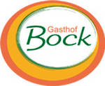

Der Gasthof Bock ist ein Landgasthof in Rettenbach, der familiäre Atmosphäre, Bodenständiges und Genuss vereint. Hier findet auch die Hochzeitsfeier statt. Der Gasthof bietet 3 Doppelzimmer an, davon ein Doppelzimmer mit zwei Einzelbetten.
Der Köghlhof & Bauerngartl wurde im Sommer 2015 eröffnet und bietet Ferienwohnungen in ruhigem Umfeld in Bernstein (ca. 2 km von Rettenbach entfernt). Die Appartements bieten Platz für zwei bis sechs Personen. Auf Wunsch kann auch ein Frühstück dazu gebucht werden.
Bad Tatzmannsdorf befindet sich ca. 12 km von Rettenbach entfernt und bietet zahlreiche Familienbetriebe, Pensionen und Hotels. Unter anderem gibt es hier auch eine Therme sowie Thermenhotels.